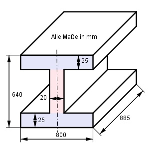

Aufgabe 61 Wie groß ist die Masse m des dargestellten Körpers, wenn seine Dichte 7,1 g/cm³ beträgt?  Der Körper besteht aus 2 gleich großen blauen und einem roten Rechteckprisma. 800 mm = 80 cm 25 mm = 2,5 cm 20 mm = 2 cm 885 mm = 88,5 cm 640 mm = 64 cm m = V * Ρ V = 2 * 80 * 2,5 * 88,5 + 2 * (64 – 2 * 2,5 ) * 88,5 cm³ V = 35 400 cm³ + 10 443 cm³ V = 45 843 cm³ m = 45 843 cm³ * 7,1 g/cm³ = 325 485 g = 325,5 kg